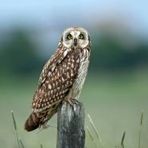

Owl

Owls are birds of prey known for their silent flight, excellent night vision, and distinctive calls.
Physical Characteristics
- Size: Owls come in various sizes, with the smallest species being around 5 inches and the largest reaching up to 33 inches in length.
- Adaptations: They have keen eyesight, a facial disc that enhances hearing, and soft feathers that reduce noise during flight.
- Powerful Talons: Owls have strong talons and a sharp beak used for hunting and capturing prey.
Behavior and Habitat
- Habitat: Owls are found on every continent except Antarctica, and they inhabit a range of environments, including forests, grasslands, and deserts.
- Nocturnal Lifestyle: Most owls are nocturnal, being more active during the night for hunting and other activities.
- Silent Flight: Specialized wing and feather structures allow owls to fly silently, which aids in surprise attacks on prey.
Diet
Owls are carnivores and primarily feed on rodents, birds, insects, and other small animals.
Conservation Status
Many owl species face threats from habitat loss, human disturbance, and illegal trade. Conservation efforts focus on protecting their habitats and raising awareness.
Interesting Facts
- Head Rotation: Owls have a unique ability to rotate their heads up to 270 degrees, allowing them to scan their surroundings without moving their bodies.
- Camouflage: Owls often have cryptic plumage patterns that help them blend into their surroundings.
- Myth and Symbolism: Owls have been associated with mythology, folklore, and symbolism in various cultures around the world.